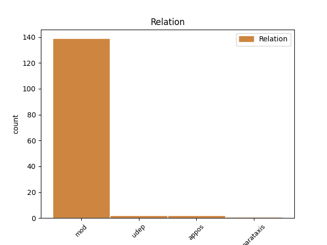
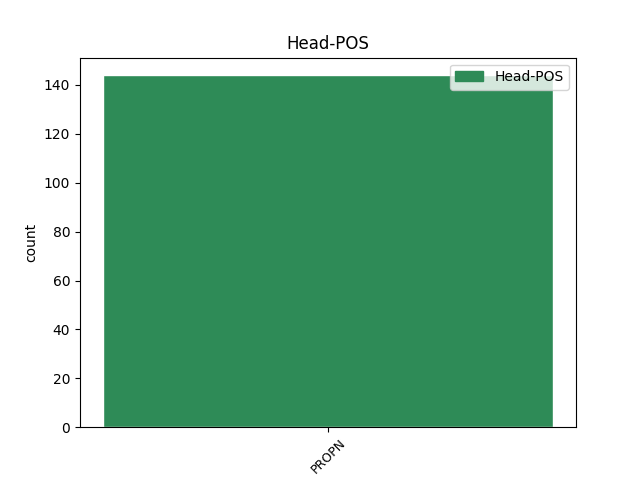
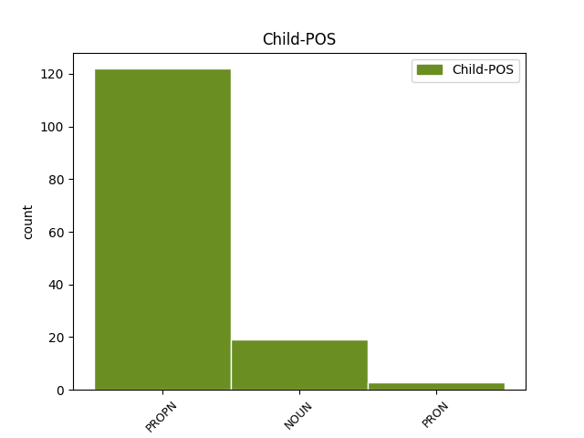

Distribution of features within this leaf



Agreement Rules sorted by frequency.
- When the dependent token is the modifer(mod) of the head token, and the head token is PROPN and the dependent token is PROPN.
1 Denisa Denisa PROPN dkt.tikr.mot.vns.V. Case=Nom|Gender=Fem|Number=Sing 2 mod _ _
2 Juodinienė Juodinienė PROPN dkt.tikr.mot.vns.V. Case=Nom|Gender=Fem|Number=Sing 0 _ _ _
1 Autorė _ _ _ _ 0 _ _ _
2 lygina _ _ _ _ 0 _ _ _
3 vakarietiškąją _ _ _ _ 0 _ _ _
4 , _ _ _ _ 0 _ _ _
5 arba _ _ _ _ 0 _ _ _
6 anglosaksiškąją _ _ _ _ 0 _ _ _
7 , _ _ _ _ 0 _ _ _
8 tradiciją _ _ _ _ 0 _ _ _
9 su _ _ _ _ 0 _ _ _
10 Rytų rytai NOUN dkt.vyr.dgs.K. Case=Gen|Gender=Masc|Number=Plur 11 mod _ _
11 Europos Europa PROPN dkt.tikr.mot.vns.K. Case=Gen|Gender=Fem|Number=Sing 0 _ _ _
12 ( _ _ _ _ 0 _ _ _
13 daugiausia _ _ _ _ 0 _ _ _
14 Lenkijos _ _ _ _ 0 _ _ _
15 ir _ _ _ _ 0 _ _ _
16 Lietuvos _ _ _ _ 0 _ _ _
17 ) _ _ _ _ 0 _ _ _
18 tradicijomis _ _ _ _ 0 _ _ _
19 . _ _ _ _ 0 _ _ _
1 Štai _ _ _ _ 0 _ _ _
2 keliems _ _ _ _ 0 _ _ _
3 fiziniams _ _ _ _ 0 _ _ _
4 asmenims _ _ _ _ 0 _ _ _
5 už _ _ _ _ 0 _ _ _
6 koncepciją _ _ _ _ 0 _ _ _
7 „ _ _ _ _ 0 _ _ _
8 Lietuva Lietuva PROPN dkt.tikr.mot.vns.V. Case=Nom|Gender=Fem|Number=Sing 0 _ _ _
9 - _ _ _ _ 0 _ _ _
10 drąsi _ _ _ _ 0 _ _ _
11 šalis šalis NOUN dkt.mot.vns.V. Case=Nom|Gender=Fem|Number=Sing 8 appos _ _
12 “ _ _ _ _ 0 _ _ _
13 sumokėta _ _ _ _ 0 _ _ _
14 60 _ _ _ _ 0 _ _ _
15 tūkst _ _ _ _ 0 _ _ _
16 . _ _ _ _ 0 _ _ _
17 litų _ _ _ _ 0 _ _ _
18 . _ _ _ _ 0 _ _ _
1 Sąjūdis _ _ _ _ 0 _ _ _
2 : _ _ _ _ 0 _ _ _
3 nuo _ _ _ _ 0 _ _ _
4 „ _ _ _ _ 0 _ _ _
5 Persitvarkymo _ _ _ _ 0 _ _ _
6 “ _ _ _ _ 0 _ _ _
7 iki _ _ _ _ 0 _ _ _
8 Kovo _ _ _ _ 0 _ _ _
9 11-osios _ _ _ _ 0 _ _ _
10 , _ _ _ _ 0 _ _ _
11 t _ _ _ _ 0 _ _ _
12 . _ _ _ _ 0 _ _ _
13 12 _ _ _ _ 0 _ _ _
14 , _ _ _ _ 0 _ _ _
15 d _ _ _ _ 0 _ _ _
16 . _ _ _ _ 0 _ _ _
17 1 _ _ _ _ 0 _ _ _
18 . _ _ _ _ 0 _ _ _
19 Vilnius Vilnius PROPN dkt.tikr.vyr.vns.V. Case=Nom|Gender=Masc|Number=Sing 0 _ _ _
20 : _ _ _ _ 0 _ _ _
21 Baltos _ _ _ _ 0 _ _ _
22 lankos lanka NOUN dkt.mot.dgs.V. Case=Nom|Gender=Fem|Number=Plur 19 parataxis _ SpaceAfter=No
23 , _ _ _ _ 0 _ _ _
24 2008 _ _ _ _ 0 _ _ _
25 . _ _ _ _ 0 _ _ _
1 Tai _ _ _ _ 0 _ _ _
2 liudytų _ _ _ _ 0 _ _ _
3 ir _ _ _ _ 0 _ _ _
4 tam _ _ _ _ 0 _ _ _
5 tikras _ _ _ _ 0 _ _ _
6 techninis _ _ _ _ 0 _ _ _
7 neišbaigtumas _ _ _ _ 0 _ _ _
8 - _ _ _ _ 0 _ _ _
9 tekste _ _ _ _ 0 _ _ _
10 painiojami _ _ _ _ 0 _ _ _
11 Paleckio _ _ _ _ 0 _ _ _
12 inicialai _ _ _ _ 0 _ _ _
13 , _ _ _ _ 0 _ _ _
14 42 _ _ _ _ 0 _ _ _
15 puslapyje _ _ _ _ 0 _ _ _
16 vietoj _ _ _ _ 0 _ _ _
17 Antano _ _ _ _ 0 _ _ _
18 atsirado _ _ _ _ 0 _ _ _
19 kažkoks kažkoks PRON įv.vyr.vns.V. Case=Nom|Definite=Ind|Gender=Masc|Number=Sing|PronType=Ind 22 mod _ _
20 J _ _ _ _ 0 _ _ _
21 . _ _ _ _ 0 _ _ _
22 Sniečkus Sniečkus PROPN dkt.tikr.vyr.vns.V. Case=Nom|Gender=Masc|Number=Sing 0 _ _ _
23 . _ _ _ _ 0 _ _ _
1 Ši _ _ _ _ 0 _ _ _
2 vienuolija _ _ _ _ 0 _ _ _
3 yra _ _ _ _ 0 _ _ _
4 dalis _ _ _ _ 0 _ _ _
5 Ukrainoje Ukraina PROPN dkt.tikr.mot.vns.Vt. Case=Loc|Gender=Fem|Number=Sing 0 _ _ _
6 , _ _ _ _ 0 _ _ _
7 Lvove Lvovas PROPN dkt.tikr.vyr.vns.Vt. Case=Loc|Gender=Masc|Number=Sing 5 udep _ SpaceAfter=No
8 , _ _ _ _ 0 _ _ _
9 esančio _ _ _ _ 0 _ _ _
10 vienuolyno _ _ _ _ 0 _ _ _
11 . _ _ _ _ 0 _ _ _
Disagree Examples:
1 Laikraščio _ _ _ _ 0 _ _ _
2 eseisto _ _ _ _ 0 _ _ _
3 tevertos _ _ _ _ 0 _ _ _
4 pastabos _ _ _ _ 0 _ _ _
5 , _ _ _ _ 0 _ _ _
6 kad _ _ _ _ 0 _ _ _
7 paminklo _ _ _ _ 0 _ _ _
8 Taravos Tarava PROPN dkt.tikr.mot.vns.K. Case=Gen|Gender=Fem|Number=Sing 9 mod _ _
9 Anikei Anikei PROPN dkt.tikr.mot.vns.N. Case=Dat|Gender=Fem|Number=Sing 0 _ _ _
10 atstatymas _ _ _ _ 0 _ _ _
11 Klaipėdoje _ _ _ _ 0 _ _ _
12 - _ _ _ _ 0 _ _ _
13 „ _ _ _ _ 0 _ _ _
14 lyg _ _ _ _ 0 _ _ _
15 ir _ _ _ _ 0 _ _ _
16 teikė _ _ _ _ 0 _ _ _
17 viltį _ _ _ _ 0 _ _ _
18 , _ _ _ _ 0 _ _ _
19 kad _ _ _ _ 0 _ _ _
20 prasidėjęs _ _ _ _ 0 _ _ _
21 taikus _ _ _ _ 0 _ _ _
22 Vokietijos _ _ _ _ 0 _ _ _
23 „ _ _ _ _ 0 _ _ _
24 grįžimas _ _ _ _ 0 _ _ _
25 “ _ _ _ _ 0 _ _ _
26 į _ _ _ _ 0 _ _ _
27 Europą _ _ _ _ 0 _ _ _
28 nepaliks _ _ _ _ 0 _ _ _
29 nuošalyje _ _ _ _ 0 _ _ _
30 ir _ _ _ _ 0 _ _ _
31 Lietuvos _ _ _ _ 0 _ _ _
32 “ _ _ _ _ 0 _ _ _
33 . _ _ _ _ 0 _ _ _
1 Šį _ _ _ _ 0 _ _ _
2 juodą _ _ _ _ 0 _ _ _
3 caro _ _ _ _ 0 _ _ _
4 darbą _ _ _ _ 0 _ _ _
5 brutaliausiais _ _ _ _ 0 _ _ _
6 metodais _ _ _ _ 0 _ _ _
7 Vakarų vakarai NOUN dkt.vyr.dgs.K. Case=Gen|Gender=Masc|Number=Plur 8 mod _ _
8 Ukrainoje Ukraina PROPN dkt.tikr.mot.vns.Vt. Case=Loc|Gender=Fem|Number=Sing 0 _ _ _
9 užbaigė _ _ _ _ 0 _ _ _
10 Stalinas _ _ _ _ 0 _ _ _
11 . _ _ _ _ 0 _ _ _
1 LIETUVA Lietuva PROPN dkt.tikr.mot.vns.V. Case=Nom|Gender=Fem|Number=Sing 0 _ _ _
2 EUROPOS _ _ _ _ 0 _ _ _
3 SĄJUNGOS _ _ _ _ 0 _ _ _
4 BIUDŽETO _ _ _ _ 0 _ _ _
5 PERŽIŪROS _ _ _ _ 0 _ _ _
6 PROCESE procesas NOUN dkt.vyr.vns.Vt. Case=Loc|Gender=Masc|Number=Sing 1 udep _ SpaceAfter=No
7 : _ _ _ _ 0 _ _ _
8 TARP _ _ _ _ 0 _ _ _
9 EUROPINIŲ _ _ _ _ 0 _ _ _
10 IR _ _ _ _ 0 _ _ _
11 NACIONALINIŲ _ _ _ _ 0 _ _ _
12 INTERESŲ _ _ _ _ 0 _ _ _
1 Mano aš PRON įv.vns.K. Case=Gen|Definite=Ind|Number=Sing|Person=1|PronType=Prs 5 mod _ _
2 baltą _ _ _ _ 0 _ _ _
3 „ _ _ _ _ 0 _ _ _
4 Ford _ _ _ _ 0 _ _ _
5 Sierrą Sierra PROPN dkt.tikr.mot.vns.G. Case=Acc|Gender=Fem|Number=Sing 0 _ _ _
6 “ _ _ _ _ 0 _ _ _
7 nuolat _ _ _ _ 0 _ _ _
8 kas _ _ _ _ 0 _ _ _
9 nors _ _ _ _ 0 _ _ _
10 daužė _ _ _ _ 0 _ _ _
11 : _ _ _ _ 0 _ _ _
12 tai _ _ _ _ 0 _ _ _
13 aš _ _ _ _ 0 _ _ _
14 pats _ _ _ _ 0 _ _ _
15 , _ _ _ _ 0 _ _ _
16 tai _ _ _ _ 0 _ _ _
17 kas _ _ _ _ 0 _ _ _
18 nors _ _ _ _ 0 _ _ _
19 kitas _ _ _ _ 0 _ _ _
20 . _ _ _ _ 0 _ _ _
1 Einu _ _ _ _ 0 _ _ _
2 į _ _ _ _ 0 _ _ _
3 stovėjimo _ _ _ _ 0 _ _ _
4 aikštelę _ _ _ _ 0 _ _ _
5 ir _ _ _ _ 0 _ _ _
6 sapnuoju _ _ _ _ 0 _ _ _
7 – _ _ _ _ 0 _ _ _
8 į _ _ _ _ 0 _ _ _
9 mano aš PRON įv.vns.K. Case=Gen|Definite=Ind|Number=Sing|Person=1|PronType=Prs 11 mod _ _
10 „ _ _ _ _ 0 _ _ _
11 Fordą Fordas PROPN dkt.tikr.vyr.vns.G. Case=Acc|Gender=Masc|Number=Sing 0 _ _ _
12 “ _ _ _ _ 0 _ _ _
13 lekia _ _ _ _ 0 _ _ _
14 „ _ _ _ _ 0 _ _ _
15 Golfas _ _ _ _ 0 _ _ _
16 “ _ _ _ _ 0 _ _ _
17 . _ _ _ _ 0 _ _ _